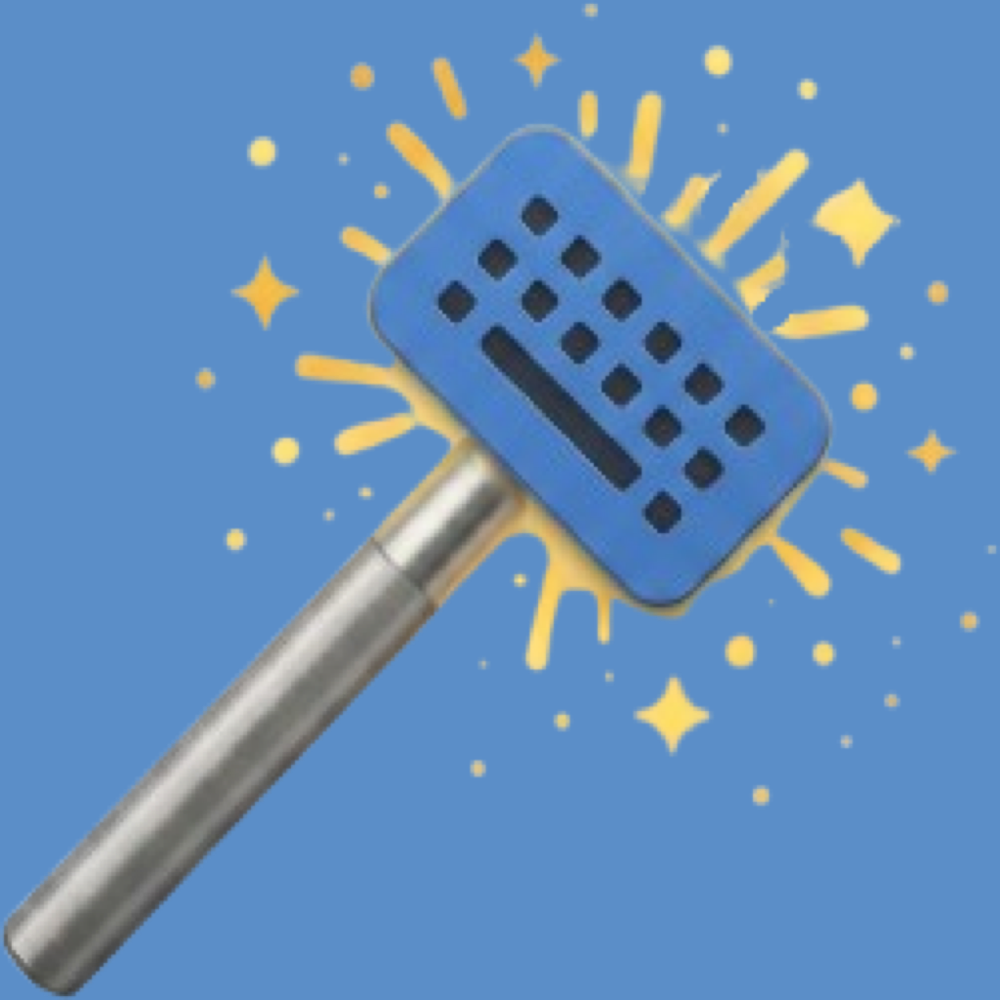

הקלדת "susu" והתכוונת ל"דודו"? קיצור אחד ונגמר.
אפליקציית שורת תפריטים ל-macOS שמתקנת טקסט שהוקלד בשפה הלא נכונה.
בלי למחוק, בלי להקליד מחדש — סימון, קיצור מקלדת, והטקסט מתוקן במקום.
קובץ DMG · 1.5MB · חתום ומאושר ע"י Apple
כל מי שעובד בשתי שפות מכיר את זה — התחלת להקליד ורק אחרי משפט שלם שמת לב שהמקלדת הייתה בשפה השנייה.
כל מילה נבדקת מול בודק האיות של macOS בעברית ובאנגלית, והאפליקציה מחליטה לבד מה צריך תיקון ולאיזה כיוון — בלי שתגיד לה.
הטקסט מתוקן ישירות בשדה שבו הוא נמצא, בכל אפליקציה. סמן את מה שרוצים לתקן, או פשוט תקן את כל השדה.
מילים שכבר כתובות נכון נשארות כמו שהן — גם במשפט מעורבב עברית ואנגלית.
נטען עם המחשב, לא תופס מקום ב-Dock, ומודיע לך בקצרה מה תוקן.
ארבעה שלבים, שניים מהם קורים לבד.
הקלדת משפט שלם והמקלדת הייתה בשפה הלא נכונה.
סמן את הטקסט המשובש — או אל תסמן כלום, וכל השדה יתוקן.
הוא עובר מילה־מילה, מחליט מה משובש ולאיזה כיוון להמיר, ומחליף את הטקסט במקום.
⌃⌥Space מתקן את הטקסט וגם מעביר את המקלדת לשפה הבאה, כדי שתמשיך להקליד נכון.